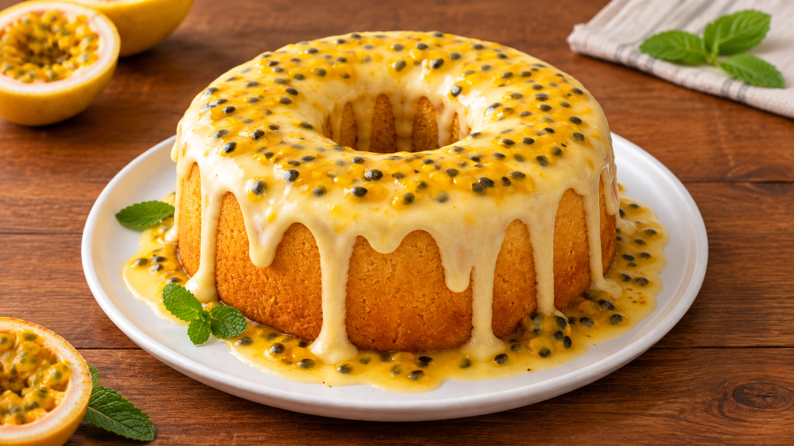

Receita de Bolo de maracujá (Um só)
Um bolo de maracujá prontinho para comer em qualquer ocasião
Ingredientes
Massa
- 3 ovos
- 1/2 xícara de manteiga (derretida)
- 1 e 1/2 xícaras de açúcar
- 1 xícara de suco de maracujá (puro)
- 2 xícaras de farinha de trigo
- 1 colher de sopa de amido de milho
- 1 pitada de sal
- 1 colher de sopa de fermento em pó
Cobertura
- 1 lata de leite condensado
- 1/2 caixa de creme de leite (100g)
- 1/2 xícara de suco de maracujá
- Polpa de 2 maracujás (com sementes)
Modo de Preparo
Massa
- Preaqueça o forno a 180°C.
- Em uma tigela, bata os ovos com o açúcar até formar um creme claro.
- Adicione a manteiga derretida e misture bem.
- Acrescente o suco de maracujá e mexa.
- Incorpore a farinha de trigo, o amido de milho e o sal aos poucos.
- Por último, adicione o fermento e misture delicadamente.
- Despeje em uma forma untada e enfarinhada.
- Leve ao forno por aproximadamente 35 a 45 minutos, ou até dourar.
- Espere esfriar antes de desenformar.
Cobertura
- Em uma tigela, misture o leite condensado com o suco de maracujá até engrossar.
- Adicione o creme de leite e misture até ficar bem cremoso.
- Despeje sobre o bolo já frio.
- Finalize com a polpa de maracujá por cima
Para um sabor ainda mais intenso, use suco de maracujá natural bem concentrado e peneire apenas parte das sementes — deixar algumas dá um charme especial e uma leve crocância na cobertura 😋
Nutrição
Tabela de valores nutricionais do bolo por fatia
| Calorias |
220kcal |
| Carboidratos |
17g |
| Proteínas |
2g |
| Gorduras totais |
10g |